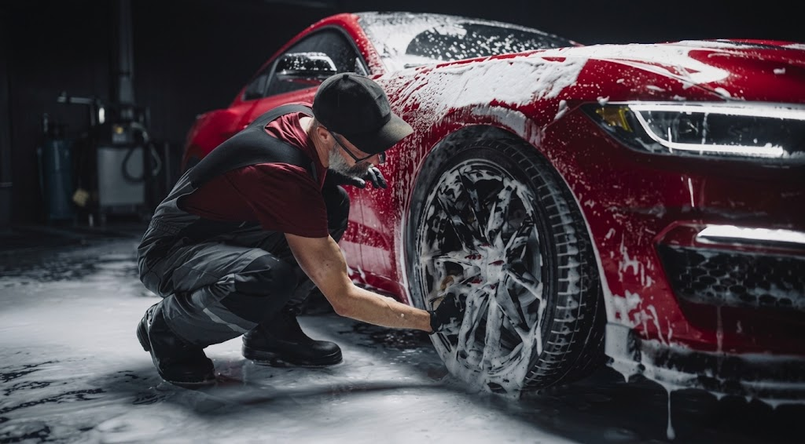
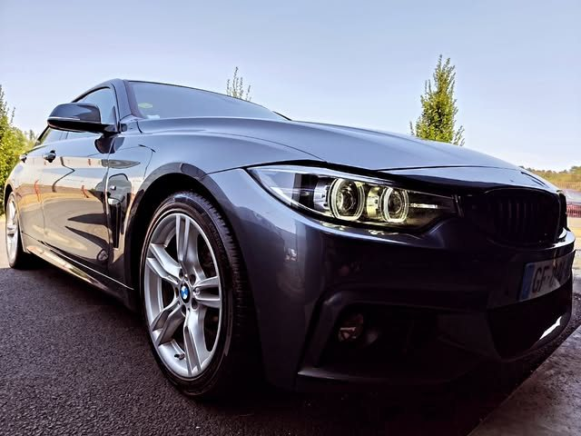
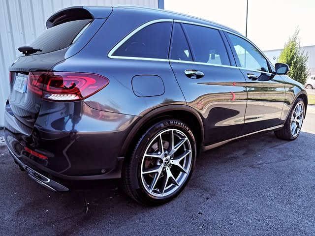
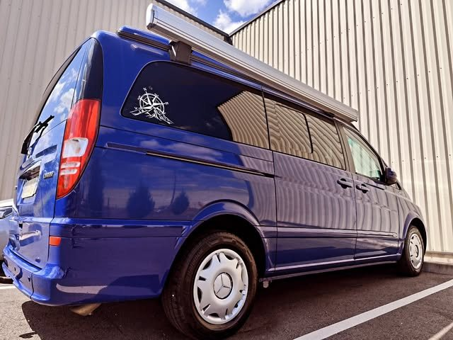
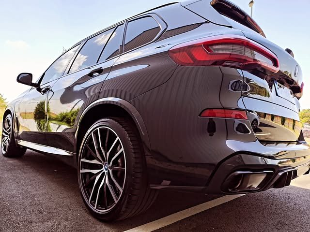
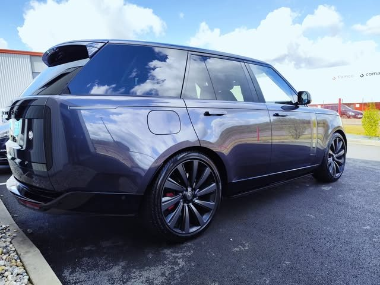

<meta charset="utf-8" />
<title>Monsieur Lavage Checy</title>
<meta name="description" content="Nettoyage automobile intérieur, extérieur et lustrage à Checy — le soin d'un artisan pour votre véhicule." />
<link rel="preconnect" href="https://fonts.googleapis.com" />
<link rel="preconnect" href="https://fonts.gstatic.com" crossorigin />
<link rel="stylesheet" href="https://fonts.googleapis.com/css2?family=Bricolage+Grotesque:opsz,wght@12..96,500;12..96,600;12..96,700&family=Hanken+Grotesk:wght@400;500;600&display=swap" />

<style>
  /* Monsieur Lavage Checy — clean light identity.
     Committed single light world; every ground + colour set explicitly. */
  :root {
    --bg: #ffffff;
    --bg-2: #f6f5f2;        /* warm off-white for alternating sections */
    --ink: #16161a;         /* headings + body text */
    --mid: #6d6b66;         /* muted copy */
    --line: #e8e6df;        /* hairlines */
    --line-strong: #d6d3ca;
    --sand: #8a7d67;        /* warm label accent, legible on white */
    --accent: #cf4a25;      /* single action colour */
    --accent-hover: #b63f1e;

    --maxw: 1240px;
    --pad: clamp(1.25rem, 5vw, 4rem);

    --fs-label: 0.72rem;
    --fs-body: 1.02rem;
    --fs-lead: clamp(1.05rem, 1.6vw, 1.22rem);
    --fs-h3: clamp(1.3rem, 2.4vw, 1.7rem);
    --fs-h2: clamp(2rem, 5vw, 3.4rem);
    --fs-h1: clamp(2.6rem, 5.4vw, 4.4rem);

    --ff-display: "Bricolage Grotesque", "Arial Narrow", system-ui, sans-serif;
    --ff-body: "Hanken Grotesk", system-ui, -apple-system, "Segoe UI", sans-serif;

    color-scheme: light;
  }

  * { box-sizing: border-box; }

  html { scroll-behavior: smooth; }
  @media (prefers-reduced-motion: reduce) {
    html { scroll-behavior: auto; }
    * { animation-duration: .001ms !important; transition-duration: .001ms !important; }
  }

  body {
    margin: 0;
    background: var(--bg);
    color: var(--ink);
    font-family: var(--ff-body);
    font-size: var(--fs-body);
    line-height: 1.62;
    -webkit-font-smoothing: antialiased;
  }

  h1, h2, h3 { margin: 0; font-family: var(--ff-display); font-weight: 600; line-height: 1.03; letter-spacing: -0.02em; text-wrap: balance; color: var(--ink); }
  p { margin: 0; }
  a { color: inherit; }
  img, svg { display: block; max-width: 100%; }

  .wrap { width: 100%; max-width: var(--maxw); margin-inline: auto; padding-inline: var(--pad); }

  .label {
    font-family: var(--ff-body);
    font-size: var(--fs-label);
    letter-spacing: 0.24em;
    text-transform: uppercase;
    font-weight: 600;
    color: var(--sand);
  }

  .btn {
    display: inline-flex; align-items: center; gap: 0.7em;
    font-family: var(--ff-body); font-weight: 600;
    font-size: 0.82rem; letter-spacing: 0.12em; text-transform: uppercase;
    text-decoration: none;
    padding: 1.05rem 1.9rem;
    background: var(--accent); color: #fff;
    border: 1px solid var(--accent);
    transition: background .2s ease, border-color .2s ease, transform .2s ease;
  }
  .btn:hover { background: var(--accent-hover); border-color: var(--accent-hover); transform: translateY(-2px); }
  .btn--ghost { background: transparent; color: var(--ink); border-color: var(--line-strong); }
  .btn--ghost:hover { background: var(--bg-2); border-color: var(--ink); }

  a:focus-visible, .btn:focus-visible { outline: 2px solid var(--accent-hover); outline-offset: 3px; }

  /* ---------- header ---------- */
  header.bar {
    position: sticky; top: 0; z-index: 30;
    background: rgba(255, 255, 255, 0.86);
    backdrop-filter: blur(12px);
    border-bottom: 1px solid var(--line);
  }
  .bar__in { display: flex; align-items: center; justify-content: space-between; gap: 1.5rem; padding-block: 0.85rem; }
  .bar__brand { display: flex; align-items: center; gap: 0.7rem; text-decoration: none; }
  .bar__brand svg { width: 34px; height: 34px; }
  .bar__brand b { font-family: var(--ff-display); font-weight: 700; font-size: 1rem; letter-spacing: 0.01em; }
  .bar__nav { display: flex; gap: 2rem; }
  .bar__nav a { font-size: var(--fs-label); letter-spacing: 0.18em; text-transform: uppercase; text-decoration: none; color: var(--mid); font-weight: 600; transition: color .2s; }
  .bar__nav a:hover { color: var(--ink); }
  .bar__cta { font-size: var(--fs-label); letter-spacing: 0.12em; text-transform: uppercase; font-weight: 600; color: var(--ink); text-decoration: none; border-bottom: 1px solid var(--accent); padding-bottom: 3px; white-space: nowrap; }
  @media (max-width: 900px) { .bar__nav { display: none; } }

  /* ---------- hero ---------- */
  .hero { border-bottom: 1px solid var(--line); }
  .hero__grid { display: grid; grid-template-columns: 1.1fr 0.9fr; align-items: stretch; }
  .hero__left { display: flex; flex-direction: column; justify-content: center; gap: 1.6rem; min-height: 68vh; padding: clamp(2.5rem, 6vw, 5rem) var(--pad); max-width: calc(var(--maxw) / 2 + var(--pad)); margin-left: auto; }
  .hero__badge { width: clamp(70px, 9vw, 96px); height: auto; }
  .hero h1 { font-size: var(--fs-h1); }
  .hero h1 .thin { font-weight: 500; color: var(--mid); }
  .hero__sub { color: var(--mid); font-size: var(--fs-lead); max-width: 42ch; }
  .hero__row { display: flex; flex-wrap: wrap; align-items: center; gap: 1rem 1.4rem; margin-top: 0.4rem; }
  .proof { display: inline-flex; align-items: center; gap: 0.6rem; font-size: 0.82rem; color: var(--mid); }
  .proof b { color: var(--ink); font-family: var(--ff-display); font-weight: 700; font-size: 0.98rem; }
  .stars { color: var(--sand); letter-spacing: 0.15em; font-size: 0.8rem; }

  .hero__right { position: relative; overflow: hidden; border-left: 1px solid var(--line); min-height: 320px; background: var(--bg-2); }
  .hero__img { position: absolute; inset: 0; width: 100%; height: 100%; object-fit: cover; object-position: 62% center; }
  .hero__right::after {
    content: ""; position: absolute; inset: 0; z-index: 1;
    background: linear-gradient(100deg, var(--bg) 0%, rgba(255,255,255,0) 16%);
  }
  /* glossy dark-panel fallback */
  .panel {
    position: absolute; inset: 0;
    background:
      linear-gradient(105deg, transparent 38%, rgba(243,241,236,0.10) 46%, rgba(243,241,236,0.02) 52%, transparent 60%),
      radial-gradient(120% 80% at 78% 8%, rgba(120,140,170,0.22), transparent 55%),
      radial-gradient(140% 120% at 10% 100%, rgba(210,77,41,0.10), transparent 55%),
      linear-gradient(180deg, #1c2330 0%, #12151b 55%, #0c0d10 100%);
  }
  .panel::after {
    content: ""; position: absolute; inset: 0;
    background: linear-gradient(180deg, transparent 55%, rgba(10,10,12,0.55) 100%);
  }
  .panel__tag {
    position: absolute; left: 1.4rem; bottom: 1.3rem; z-index: 2;
    font-size: 0.68rem; letter-spacing: 0.22em; text-transform: uppercase; color: var(--sand);
  }
  @media (max-width: 880px) {
    .hero__grid { grid-template-columns: 1fr; min-height: 0; }
    .hero__left { max-width: none; margin: 0; min-height: 0; justify-content: flex-start; padding-top: clamp(2rem, 7vw, 3rem); padding-bottom: clamp(2.5rem, 8vw, 4rem); }
    .hero__right { order: -1; border-left: 0; border-bottom: 1px solid var(--line); min-height: 62vw; max-height: 72vh; }
    .hero__right::after { background: linear-gradient(0deg, var(--bg) 0%, rgba(255,255,255,0) 14%); }
  }

  /* ---------- generic section ---------- */
  section { padding-block: clamp(4rem, 9vw, 7.5rem); }
  .head { display: grid; gap: 1rem; max-width: 54ch; margin-bottom: clamp(2.4rem, 5vw, 3.6rem); }
  .head h2 { font-size: var(--fs-h2); }
  .head p { color: var(--mid); font-size: var(--fs-lead); }

  /* ---------- services (numbered sequence: the real order of a full detail) ---------- */
  #prestations { background: var(--bg-2); border-block: 1px solid var(--line); }
  .svc { border-top: 1px solid var(--line); }
  .svc:last-child { border-bottom: 1px solid var(--line); }
  .svc__row {
    display: grid; grid-template-columns: 4rem 1fr 1.1fr auto; gap: 2rem;
    align-items: start; padding-block: 2.2rem;
  }
  .svc__num { font-family: var(--ff-display); font-weight: 700; font-size: 1.1rem; color: var(--accent); padding-top: 0.15rem; }
  .svc__name { font-size: var(--fs-h3); }
  .svc__desc { color: var(--mid); }
  .svc__list { display: flex; flex-wrap: wrap; gap: 0.4rem 0.6rem; }
  .svc__list span { font-size: 0.76rem; letter-spacing: 0.04em; color: var(--ink); border: 1px solid var(--line-strong); padding: 0.3rem 0.6rem; white-space: nowrap; }
  @media (max-width: 860px) {
    .svc__row { grid-template-columns: 2.5rem 1fr; gap: 0.6rem 1.2rem; }
    .svc__desc, .svc__list { grid-column: 2; }
  }

  /* ---------- réalisations ---------- */
  .grid {
    display: grid; grid-template-columns: repeat(6, 1fr); grid-auto-rows: 120px; gap: 12px;
  }
  .cell { position: relative; overflow: hidden; border: 1px solid var(--line); background: var(--bg-2); margin: 0; }
  .cell img { position: absolute; inset: 0; width: 100%; height: 100%; object-fit: cover; transition: transform .6s ease; }
  .cell .panel { transition: transform .6s ease; }
  .cell:hover img, .cell:hover .panel { transform: scale(1.04); }
  .cell span {
    position: absolute; left: 0.75rem; bottom: 0.75rem; z-index: 2;
    font-size: 0.6rem; letter-spacing: 0.18em; text-transform: uppercase; color: var(--ink);
    background: var(--bg); border: 1px solid var(--line); padding: 0.3rem 0.55rem;
  }
  .c-1 { grid-column: span 3; grid-row: span 3; }
  .c-2 { grid-column: span 3; grid-row: span 2; }
  .c-3 { grid-column: span 2; grid-row: span 2; }
  .c-4 { grid-column: span 2; grid-row: span 2; }
  .c-5 { grid-column: span 2; grid-row: span 2; }
  .p-black { background:
      linear-gradient(105deg, transparent 40%, rgba(243,241,236,0.09) 47%, transparent 55%),
      radial-gradient(120% 90% at 80% 0%, rgba(150,160,175,0.16), transparent 55%),
      linear-gradient(180deg, #202226, #0f0f11); }
  .p-blue { background:
      linear-gradient(100deg, transparent 42%, rgba(243,241,236,0.10) 49%, transparent 57%),
      radial-gradient(120% 90% at 75% 5%, rgba(90,120,180,0.30), transparent 55%),
      linear-gradient(180deg, #1a2537, #0d1017); }
  .p-graphite { background:
      linear-gradient(110deg, transparent 44%, rgba(243,241,236,0.08) 50%, transparent 58%),
      radial-gradient(120% 90% at 82% 8%, rgba(170,150,130,0.16), transparent 55%),
      linear-gradient(180deg, #26241f, #101010); }
  @media (max-width: 820px) {
    .grid { grid-template-columns: repeat(2, 1fr); grid-auto-rows: 40vw; }
    .c-1, .c-2, .c-3, .c-4, .c-5 { grid-column: span 1; grid-row: span 1; }
    .c-1 { grid-column: span 2; grid-row: span 1; }
  }

  /* ---------- avis ---------- */
  #avis { background: var(--bg-2); border-block: 1px solid var(--line); }
  .reviews { display: grid; grid-template-columns: repeat(3, 1fr); gap: 1.4rem; }
  .review { border: 1px solid var(--line); background: var(--bg); padding: 2rem 1.9rem; display: grid; gap: 1.1rem; align-content: start; }
  .review .stars { font-size: 0.95rem; }
  .review p { font-family: var(--ff-display); font-weight: 500; font-size: 1.22rem; line-height: 1.42; letter-spacing: -0.01em; }
  .review cite { font-style: normal; font-size: var(--fs-label); letter-spacing: 0.2em; text-transform: uppercase; color: var(--mid); }
  .note { margin-top: 1.8rem; font-size: 0.78rem; color: var(--mid); }
  @media (max-width: 820px) { .reviews { grid-template-columns: 1fr; } }

  /* ---------- contact ---------- */
  .contact { display: grid; grid-template-columns: 0.85fr 1.15fr; gap: clamp(2rem, 5vw, 4rem); align-items: stretch; }
  .contact__list { display: grid; gap: 1.5rem; align-content: center; }
  .ci { display: grid; gap: 0.2rem; }
  .ci .k { font-size: var(--fs-label); letter-spacing: 0.2em; text-transform: uppercase; color: var(--sand); }
  .ci .v { font-family: var(--ff-display); font-weight: 500; font-size: 1.16rem; color: var(--ink); }
  .ci a.v { text-decoration: none; width: max-content; border-bottom: 1px solid var(--line-strong); padding-bottom: 2px; }
  .ci a.v:hover { border-color: var(--accent); }
  .contact__map {
    position: relative; width: 100%; min-height: 340px; height: 100%; border: 1px solid var(--line);
    overflow: hidden;
    background:
      linear-gradient(0deg, rgba(210,77,41,0.06), transparent 40%),
      repeating-linear-gradient(0deg, transparent 0 38px, var(--line) 38px 39px),
      repeating-linear-gradient(90deg, transparent 0 38px, var(--line) 38px 39px),
      var(--bg-2);
  }
  .contact__map::before {
    content: ""; position: absolute; left: 18%; top: 12%; width: 64%; height: 3px;
    background: var(--line-strong); transform: rotate(24deg); transform-origin: left;
  }
  .contact__map::after {
    content: ""; position: absolute; right: 20%; bottom: 16%; width: 46%; height: 3px;
    background: var(--line-strong); transform: rotate(-14deg);
  }
  .pin { position: absolute; left: 50%; top: 50%; transform: translate(-50%, -100%); display: grid; justify-items: center; gap: 0.5rem; z-index: 2; }
  .pin i { width: 14px; height: 14px; background: var(--accent); border-radius: 50% 50% 50% 0; transform: rotate(-45deg); box-shadow: 0 0 0 6px rgba(210,77,41,0.18); }
  .pin span { font-size: 0.68rem; letter-spacing: 0.18em; text-transform: uppercase; color: var(--ink); background: var(--bg); padding: 0.35rem 0.6rem; border: 1px solid var(--line); transform: translateY(0.4rem); }
  .contact__map a { position: absolute; right: 0.9rem; bottom: 0.9rem; z-index: 2; font-size: 0.68rem; letter-spacing: 0.16em; text-transform: uppercase; color: var(--sand); text-decoration: none; border-bottom: 1px solid var(--line-strong); padding-bottom: 2px; }
  @media (max-width: 820px) { .contact { grid-template-columns: 1fr; } .contact__map { min-height: 260px; } }

  /* ---------- footer ---------- */
  footer { border-top: 1px solid var(--line); padding-block: 2.4rem; }
  .foot { display: flex; flex-wrap: wrap; gap: 0.6rem 1.4rem; justify-content: space-between; align-items: center; font-size: 0.8rem; color: var(--mid); }
  .foot a { color: var(--sand); text-decoration: none; }
</style>

<!-- reusable badge logo (placeholder recreation — swap for supplied logo file before production) -->
<svg width="0" height="0" style="position:absolute" aria-hidden="true">
  <symbol id="badge" viewBox="0 0 200 200">
    <circle cx="100" cy="100" r="96" fill="none" stroke="currentColor" stroke-width="2"/>
    <circle cx="100" cy="100" r="80" fill="none" stroke="currentColor" stroke-width="1" stroke-dasharray="1 5" stroke-linecap="round"/>
    <path id="arcTop" d="M40,100 a60,60 0 0 1 120,0" fill="none"/>
    <path id="arcBot" d="M44,100 a56,56 0 0 0 112,0" fill="none"/>
    <text fill="currentColor" font-family="Bricolage Grotesque, sans-serif" font-weight="700" font-size="15" letter-spacing="3">
      <textPath href="#arcTop" startOffset="50%" text-anchor="middle">MONSIEUR LAVAGE</textPath>
    </text>
    <text fill="currentColor" font-family="Bricolage Grotesque, sans-serif" font-weight="600" font-size="10.5" letter-spacing="2.5">
      <textPath href="#arcBot" startOffset="50%" text-anchor="middle">NETTOYAGE AUTOMOBILE</textPath>
    </text>
    <path d="M64 108 q0 -30 36 -30 q36 0 36 30" fill="none" stroke="currentColor" stroke-width="3" stroke-linecap="round"/>
    <rect x="82" y="58" width="36" height="16" rx="2" fill="currentColor"/>
    <rect x="74" y="72" width="52" height="5" rx="2.5" fill="currentColor"/>
    <path d="M86 116 q-14 2 -20 10 q12 -3 20 -3 M114 116 q14 2 20 10 q-12 -3 -20 -3" fill="currentColor"/>
    <circle cx="100" cy="112" r="3.4" fill="currentColor"/>
    <path d="M100 118 q-6 8 0 14 q6 -6 0 -14" fill="currentColor"/>
    <path d="M6 100 l6 -5 v10 z M194 100 l-6 -5 v10 z" fill="currentColor"/>
  </symbol>
</svg>

<header class="bar">
  <div class="wrap bar__in">
    <a class="bar__brand" href="#top"><svg><use href="#badge"/></svg><b>Monsieur Lavage Checy</b></a>
    <nav class="bar__nav">
      <a href="#prestations">Prestations</a>
      <a href="#realisations">Réalisations</a>
      <a href="#avis">Avis</a>
      <a href="#contact">Contact</a>
    </nav>
    <a class="bar__cta" href="tel:+33234084184">02 34 08 41 84</a>
  </div>
</header>

<main id="top">

  <section class="hero">
    <div class="hero__grid">
      <div class="hero__left">
        <svg class="hero__badge" style="color:var(--ink)"><use href="#badge"/></svg>
        <p class="label">Nettoyage automobile · Checy 45430</p>
        <h1>Votre véhicule,<br /><span class="thin">soigné à la main.</span></h1>
        <p class="hero__sub">Lavage extérieur, remise à neuf de l'habitacle, lustrage carrosserie. Un seul véhicule à la fois, à l'atelier de Checy, sur rendez-vous.</p>
        <div class="hero__row">
          <a class="btn" href="tel:+33234084184">Prendre rendez-vous</a>
          <a class="btn btn--ghost" href="#realisations">Voir le travail</a>
        </div>
        <div class="hero__row">
          <span class="proof"><span class="stars">★★★★★</span> <b>5,0</b> sur Google · 177 avis</span>
        </div>
      </div>
      <div class="hero__right">
        
      </div>
    </div>
  </section>

  <section id="prestations">
    <div class="wrap">
      <div class="head">
        <p class="label">Prestations</p>
        <h2>Trois étapes, une exigence</h2>
        <p>L'ordre d'un vrai detailing. Chaque véhicule est traité individuellement — pas de chaîne, pas de rouleaux.</p>
      </div>
      <div class="svc-list">
        <article class="svc">
          <div class="svc__row">
            <div class="svc__num">I</div>
            <div class="svc__name">Extérieur</div>
            <p class="svc__desc">Prélavage, shampoing carrosserie au pH neutre, jantes et passages de roues, vitrages, séchage micro-fibre sans trace.</p>
            <div class="svc__list"><span>Prélavage mousse</span><span>Décontamination jantes</span><span>Séchage sans trace</span></div>
          </div>
        </article>
        <article class="svc">
          <div class="svc__row">
            <div class="svc__num">II</div>
            <div class="svc__name">Intérieur</div>
            <p class="svc__desc">Aspiration intégrale, nettoyage des plastiques, cuirs et tissus, vitres intérieures, désodorisation de l'habitacle.</p>
            <div class="svc__list"><span>Aspiration sièges &amp; coffre</span><span>Soin cuirs &amp; plastiques</span><span>Shampoing tissus</span></div>
          </div>
        </article>
        <article class="svc">
          <div class="svc__row">
            <div class="svc__num">III</div>
            <div class="svc__name">Lustrage</div>
            <p class="svc__desc">Correction des micro-rayures au polish machine, rénovation de la brillance, protection cire longue tenue.</p>
            <div class="svc__list"><span>Polissage machine</span><span>Rénovation d'éclat</span><span>Protection cire</span></div>
          </div>
        </article>
      </div>
    </div>
  </section>

  <section id="realisations">
    <div class="wrap">
      <div class="head">
        <p class="label">Réalisations</p>
        <h2>Le résultat parle de lui-même</h2>
        <p>Un aperçu des véhicules passés à l'atelier. Le travail au quotidien est publié sur Instagram.</p>
      </div>
      <div class="grid">
        <figure class="cell c-1"><span>Extérieur + lustrage</span></figure>
        <figure class="cell c-2"><span>Carrosserie + jantes</span></figure>
        <figure class="cell c-3"><span>Utilitaire</span></figure>
        <figure class="cell c-4"><span>Détail arrière</span></figure>
        <figure class="cell c-5"><span>Finition</span></figure>
      </div>
      <p class="note">Photos : atelier Monsieur Lavage Checy — véhicules clients (Instagram @monsieur.lavage.checy45).</p>
    </div>
  </section>

  <section id="avis">
    <div class="wrap">
      <div class="head">
        <p class="label">Avis clients · Google</p>
        <h2>5,0 sur 5 · 177 avis Google</h2>
        <p>À Checy et autour d'Orléans, une clientèle fidèle et le bouche-à-oreille.</p>
      </div>
      <div class="reviews">
        <blockquote class="review">
          <div class="stars" aria-label="5 sur 5">★★★★★</div>
          <p>« Voiture rendue impeccable, intérieur comme neuf. Travail sérieux et vraiment soigné. »</p>
          <cite>Client Google</cite>
        </blockquote>
        <blockquote class="review">
          <div class="stars" aria-label="5 sur 5">★★★★★</div>
          <p>« Accueil au top et résultat à la hauteur. Le lustrage a redonné un coup de jeune à la carrosserie. »</p>
          <cite>Client Google</cite>
        </blockquote>
        <blockquote class="review">
          <div class="stars" aria-label="5 sur 5">★★★★★</div>
          <p>« Prestation intérieur / extérieur complète au rendez-vous. Prix juste pour la qualité. »</p>
          <cite>Client Google</cite>
        </blockquote>
      </div>
      <p class="note">Verbatims illustratifs — à remplacer par les avis réels de la fiche Google Business Profile.</p>
    </div>
  </section>

  <section id="contact">
    <div class="wrap">
      <div class="head">
        <p class="label">Contact</p>
        <h2>Prendre rendez-vous</h2>
        <p>L'atelier reçoit uniquement sur rendez-vous. Un appel suffit pour réserver un créneau.</p>
      </div>
      <div class="contact">
        <div class="contact__list">
          <div class="ci"><span class="k">Adresse</span><span class="v">12 rue Pierre et Marie Curie<br />45430 Checy</span></div>
          <div class="ci"><span class="k">Téléphone</span><a class="v" href="tel:+33234084184">02 34 08 41 84</a></div>
          <div class="ci"><span class="k">Instagram</span><a class="v" href="https://www.instagram.com/monsieur.lavage.checy45/" target="_blank" rel="noopener">@monsieur.lavage.checy45</a></div>
          <div class="ci"><span class="k">Horaires</span><span class="v">Lundi – samedi, sur rendez-vous</span></div>
          <div><a class="btn" href="tel:+33234084184">Appeler l'atelier</a></div>
        </div>
        <div class="contact__map" role="img" aria-label="Plan indiquant l'atelier au 12 rue Pierre et Marie Curie, 45430 Checy">
          <div class="pin"><i></i><span>L'atelier</span></div>
          <a href="https://www.google.com/maps?q=12+rue+Pierre+et+Marie+Curie,+45430+Checy" target="_blank" rel="noopener">Ouvrir dans Google Maps</a>
        </div>
      </div>
    </div>
  </section>

</main>

<footer>
  <div class="wrap foot">
    <span>© 2026 Monsieur Lavage Checy — Nettoyage automobile</span>
    <span>12 rue Pierre et Marie Curie, 45430 Checy · <a href="tel:+33234084184">02 34 08 41 84</a></span>
  </div>
</footer>
